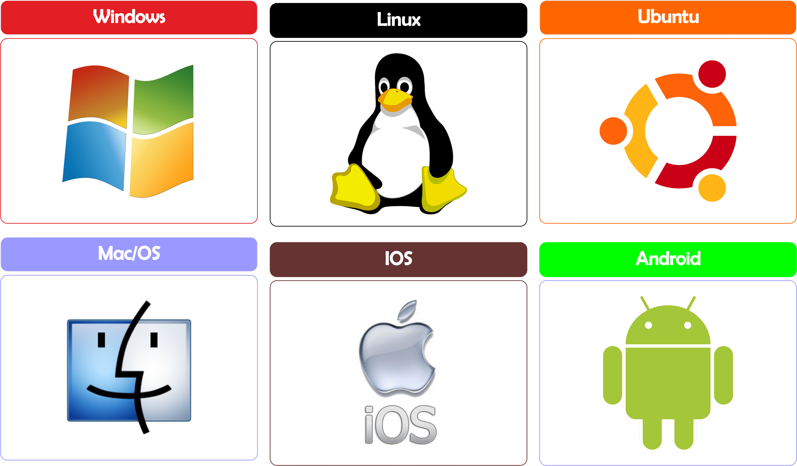

Para que Sirven y Tipos de S.O
La implantación de sistemas operativos es un proceso fundamental en la administración de equipos y servidores. Consiste en la instalación, configuración y optimización del sistema operativo para que funcione de manera eficiente y segura. Durante este aprendizaje, he trabajado con diferentes sistemas y sus características, comprendiendo su importancia en el entorno informático.
Un sistema operativo correctamente implantado garantiza estabilidad, rendimiento y seguridad en cualquier entorno. Con este conocimiento, puedo instalar y configurar sistemas adaptados a distintas necesidades, asegurando su correcto funcionamiento tanto en equipos personales como en servidores.
Tipos de Sistemas Operativos
Sistemas Operativos de Escritorio: Como Windows, macOS y distribuciones de Linux (Ubuntu, Debian, Fedora). Se utilizan en ordenadores personales y estaciones de trabajo.
Sistemas Operativos de Servidor: Diseñados para gestionar redes y servicios, como Windows Server, Linux (CentOS, Ubuntu Server) y FreeBSD.
Muchos a muchos (M): un producto puede aparecer en muchos pedidos y un pedido puede contener muchos productos.
La implantación de sistemas operativos no se trata solo de instalar un software, sino de comprender cómo funciona y optimizar su rendimiento según las necesidades del entorno. A lo largo de este proceso, he aprendido la importancia de la planificación, la seguridad y la eficiencia en la administración de sistemas.
Dominar estas técnicas no solo me permite gestionar equipos y servidores de forma profesional, sino también estar preparado para enfrentar nuevos desafíos en el mundo de la informática. Con cada implementación, sigo mejorando mis habilidades y ampliando mis conocimientos para adaptarme a las constantes innovaciones tecnológicas.